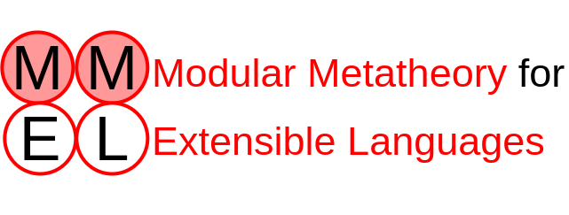

What are Extensible Languages?
In our view, extensible languages are open libraries of
independently-developed extensions building on a host language,
adding to its syntax and semantics. A language is built by
choosing a set of extensions.
See this document for more
information on our view of extensible languages.
What is Modular Metatheory?
Metatheory is the set of properties known to be true of a
programming language. A common example is type
preservation, that expressions evaluate to values of the same
type (e.g. an expression of type int will evaluate to
a value of type int), guaranteeing type errors do not
arise when a well-typed program runs.
Modular metatheory permits the host language and extensions to it
to introduce metatheoretic properties independently of one
another and prove them modularly such that each property is
guaranteed to hold for any composed language containing the module
introducing the property. The proofs as well as the properties
are carried out by modules independently, with each module writing
its proofs without knowledge of other extensions in the library.
Our Approach
Our approach to modular metatheory is based on two ideas:
- Decomposing proofs: Proofs
are broken down on the boundaries between language modules,
and the responsibility for writing them distributed.
- Generic reasoning: When the
proof pieces cannot be distributed, we reason generically
about unknown extensions based on broad constraints imposed on
their behavior.
We demonstrate the soundness of this approach by using the
modular proofs written using the above ideas to construct proofs
automatically for any composed language.
This approach is detailed in our
paper, "A Modular
Approach to Metatheoretic Reasoning for Extensible Languages".
Sterling and Extensibella code for the example from this paper can
be
found here.
Consult our walkthrough
for a practical overview of modular metatheory and how we use our tools for
specifying extensible languages and proving properties of them.
Also consult our
other reasoning
examples, such as

Sterling is a system for writing
extensible languages
implementing our view of
extensible languages. Language constructs are given as sets
of constructors, and language semantics are given using relations
defined by rules. Sterling checks language descriptions for
well-formedness, including the limitations on extensions.

Extensibella is a system for
modular metatheory. It provides an interactive proof assistant
for reasoning about extensible
languages implementing our view
of extensible languages, ensuring proofs are modular and
extensions fulfill their proof obligations. Extensibella
also provides a proof composer, turning modular proofs into full
proofs for properties for a composed language.